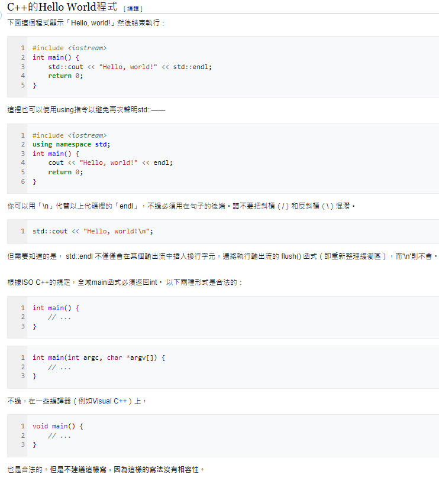

C++語言發展大概可以分為三個階段：第一階段從80年代到1995年。這一階段C++語言基本上是傳統類型上的物件導向語言，並且憑藉著接近C語言的效率，在工業界使用的開發語言中佔據了相當大份額；第二階段從1995年到2000年，這一階段由於標準模板庫（STL）和後來的Boost等程式庫的出現，泛型程式設計在C++中佔據了越來越多的比重。當然，同時由於Java、C#等語言的出現和硬體價格的大規模下降，C++受到了一定的衝擊；第三階段從2000年至今，由於以Loki、MPL(Boost)等程式庫為代表的產生式程式設計和模板元程式設計的出現，C++出現了發展歷史上又一個新的高峰，983年，C with Classes改命名為C++（++是C語言中的增值運算子）。
加入了新的特性，其中包括虛擬函式、函式名和運算子多載、參考、常數、使用者可控制的自由空間儲存區控制、改良的型別檢查，以及新的雙斜線（//）單行註解風格。
1985年，發佈第一版《C++程式設計語言》，提供一個重點的語言參考，至此還不是官方標準[4]。1985年10月出現了第一個商業化發佈。
1989年，發佈了Release 2.0。引了多重繼承、抽象類別、靜態成員函式、常數成員函式，以及成員保護。1990年，出版了The Annotated C++ Reference Manual。這本書後來成為標準化的基礎。稍後還引入了模板、例外處理、命名空間、新的強制型別轉換，以及布林型別。
隨著C++語言的演變，也逐漸演化出相應的標準程式庫。最先加進C++標準函式庫的是串流I/O程式庫，其用以取代傳統的C函式，如printf和scanf。隨後所引入的程式庫中最重要的便是標準模板庫，簡稱STL。
多年後，一個聯合的ANSI-ISO委員會於1998年對C++標準化（ISO/IEC 14882：1998）。在官方釋出1998標準的若干年後，委員會處理缺陷報告，並於2003年發佈一個C++標準的修正版本。2005年，一份名為Library Technical Report 1（簡稱TR1）的技術報告釋出。雖然還不是官方標準的一部分，不過它所提供的幾個擴展可望成為下一版C++標準的一部分。幾乎所有目前仍在維護的C++編譯器皆已支援TR1。
目前最新的C++標準是2020年12月發布的ISO/IEC 14882:2020[5]，又稱C++20。
雖然C++免專利，但標準檔案本身並不是免費的，儘管標準文件不是免費的，但是很容易從網路中取得，最簡單的就是C++標準文件之前的最後一次草稿版本，它與標準的差別幾乎只在於排版上。
C++這個名字是Rick Mascitti於1983年中所建議的，並於1983年12月首次使用。更早以前，尚在研究階段的發展中語言曾被稱為「new C」，之後是「C with Classes」。在電腦科學中，C++仍被稱為C語言的上層結構。它最後得名於C語言中的「++」運算子（其對變數的值進行遞增）。而且在共同的命名約定中，使用「+」以表示增強的程式。史特勞斯特魯普說：「這個名字象徵著源自於C語言變化的自然演進」。C+是一個和C/C++無關的早期程式語言。 Rick Mascitti在1992年被非正式地問起名字的由來，他表示這是在半開玩笑中說出的。他從沒想過C++會成為這門語言的正式名字。
